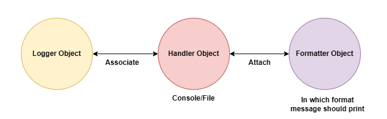

LOGGING¶
What the need of logging¶
- log file
- log book
- log table
- log libray
- log lab
- log office
computer lab log book:
S.no, Date, Name, RollNo, login time, desk no/pc no, logout
- traking
- debugging
debugging => to identifying the bug and fix the bug
Note: It is higly recommended to sotre complete application flow and exception information to a file. This process is called logging
The main advantages of logging are:
- We can use log files performing debugging.
- we can provide statistic like number of request per day etc.
logging is language in dependent concept
loggin Levels¶
- CRITICAL --> 50
- ERROR --> 40
- WARNING --> 30
- INFO --> 20
- DEBUG --> 10
default logging level : WARNING¶
The main advantages of logging are¶
- We can use log file performing debugging
- We can provide statiistic number of request per day etc
It is higly recommended to store compile application flow and Exception information to a file
Implement logging¶
module: logging
logging level¶
depending on type of information, logging data is divided into the following levels in python.
- CRITICAL => 50 (in java we use fateral)
- Respresents a very serious problem that need high attention
- ERROR = > 40
- Represents a serious error
- WARNING => 30 (An alert to programmer)
- Represents a warning message, some cation needed.It is alert to the programmer
- INFO => 20
- Represents a message with some importasnt information
- DEBUG => 10
- Represent a message which can be used for dubugging
- NOTSET => 0
- Represents logging level not set
Default logging level: WARNING
How to implement logging¶
- Create log file to store our log messages, we have to specift level
- basicConfig() funvtion of logging module
logging.basicConfig(filename='log.txt', level = logging.warning)logging.basicConfig(filename='log.txt', level = 30)- automatically file will be create 30 or higger will be shown
DEBUG(20) ==> INFO(20) ==> WARNING(30) => ERROR(40) ==> CRITICSL(50)
Write Information¶
import logging
logging.debug(message)
logging.info(message)
logging.warning(message)
logging.error(message)
logging.critical(message)
Write a python program to create a log file and write WARNING and Higher level message?¶
- If we are not specifing file name : console
- By default in log file data will be appended
- Instead of appending if we wan't overwrite
- filemode = 'w'
- filemode = 'a'
- default value for file mode: a means append
import logging
logging.basicConfig(filename='log.txt',level=logging.WARNING,filemode='w')
logging.debug('Debug message')
logging.info('Info message')
logging.warning('Warning message')
logging.error('Error message')
logging.critical('Critical message')
o/p
How to format log messages?¶
- default format of log message
- level:name of loger:message
- if we want to formate, we should go for :formate armument
logging.basicConfig(formate='%(level-name)s') %(message)s
Q How to add TimeStamp in log message?¶
logging.basicConfig(format = '%(asctime)S %(levelname)s')
Q How to change data and time formate?¶
logging.basicConfig(format = '%(asctime)S %(levelname)s'),datefmt=(%d/%m/%Y %I: %M: %S %P)
- %P => P.M/A.M
- %I => 12 Hour time scale
- %H => 12 hour time scale
- Y => capital
Q How to write python program exception to log file?¶
Note : log may not work on jupyter
import logging
logging.basicConfig(filename="exception_zero.log",format = '%(asctime)s %(levelname)s',filemode='w')
logging.info('New Request Come')
try:
x=int(input("enter x "))
y=int(input("enter y "))
print(x/y)
except ZeroDivisionError as msg:
logging.exception(msg)
print(msg)
except TypeError as msg:
logging.exception(msg)
print("value id in string")
except ValueError as msg:
logging.exception(msg)
print("please enter in interge or float")
logging.info('Request Complete!!')
import logging
logging.basicConfig(
filename='mylog.txt',
level=logging.DEBUG, #Debug or high level recomended
format = '%(asctime)s %(levelname)s %(message)s', datefmt= ('%d/%m/%Y %I: %M: %S %P'),
filemode='a')
logging.debug('Debug message')
logging.info('Info message')
logging.warning('Warning message')
logging.error('Error message')
logging.critical('Critical message')
level.INFO:root:info message
- root => logger name
- info message => message
- logging.debug('') => 10 => lower level
Note:
- Defautl logger is root logger
- If we not specifiy file name data will writen to console
loggin Levels chart¶
- CRITICAL => 50
- ERROR => 40
- WARNING => 30
- INFO => 20
- DEBUG => 10
default logging level : WARNING
The main advantages of logging are
- We can use log file performing debugging
- We can provide statiistic number of request per day etc
It is higly recommended to store compile application flow and Exception information to a file¶
Problems with root logger¶
- Root logger can handle either console or file but not simantiously
- Root logger is the default logger
Problems¶
- Once we set basic configuration the that configuration is final and we cannot change.
- It will always work only one handler either file or console but not both simantiously.
- It is not possible to configure logger with different configuation at different level.
- We cannot specifiy multiple log files for multiple modules/classes/metods
To overcome these problems we should go for our own customized logger
Customized logger ceration and usage¶

-
Creation of logger object and set log level
-
Creation of Handler Object:
- There are multiple types of handler like stramHandler, FileHandler etc
- Stream Handler =Write massage to console
-
Creation of formatter Object
-
Add Formatter to Handler
-
Add Handler to logger
-
Write message by using logger object
Note:
- By Default logger level will be available to handler. But we can define our own level at handler level which will be the final for that handler
- Handler level should be supported by logger
- i.e logger log level should be lower than handler other wise only logger log level will be considered
fiile handler¶
import logging
logger = logging.getLogger('demologger')
logger.setLevel(logging.DEBUG)
fileHandler = logging.FileHandler('abc.log',mode='a')
fileHandler.setLevel(logging.ERROR)
formatter = logging.Formatter('%(asctime)s:%(name)s: %(levelname)s: %(message)s',datefmt = '%d-%m-%Y %I:%M:%S %p')
fileHandler.setFormatter(formatter)
logger.addHandler(fileHandler)
logger.debug('debug message')
logger.info('info message')
logger.warning('warn message')
logger.error('error message')
logger.critical('critical message')
# for both console & filr handler
import logging
logger = logging.getLogger('demologger')
logger.setLevel(logging.INFO)
fileHandler = logging.FileHandler('file1.log',mode='a')
fileHandler.setLevel(logging.ERROR)
consoleHandler = logging.StreamHandler()
consoleHandler.setLevel(logging.INFO)
formatter = logging.Formatter('%(asctime)s:%(name)s: %(levelname)s: %(message)s',datefmt = '%d-%m-%Y %I:%M:%S %p')
fileHandler.setFormatter(formatter)
consoleHandler.setFormatter(formatter)
logger.addHandler(fileHandler)
logger.addHandler(consoleHandler)
logger.debug('debug message')
logger.info('info message')
logger.warning('warn message')
logger.error('error message')
logger.critical('critical message')
Use multiple log files for multiple module¶
Use separate log file for every module

#### Student.py
import logging
logger = logging.getLogger('studentLogger')
logger.setLevel(logging.DEBUG)
fileHandler = logging.FileHandler('student.log', mode='a')
# fileHandler = logging.FileHandler('student.log',mode = 'a')
fileHandler.setLevel(logging.ERROR)
# formatter = logging.Formatter('%(asctime)s:%(name)s: %(levelname)s: %(message)s',datefmt = '%d-%m-%Y %I:%M:%S %p')
# formatter = logging.Formatter('%(asctime)s - %(name)s - %(message)s',datefmt = '%d - %m - %Y %I:%M:%S %p')
fileHandler.setFormatter(formatter)
logger.addHandler(fileHandler)
logger.debug('deug message from student')
logger.info('Info message from student')
logger.warning('Warning message from student')
logger.error('Error message from student')
logger.critical('Critical message from student')
#### test.py
import logging
import student
logger = logging.getLogger('testlogger')
logger.setLevel(logging.DEBUG)
fileHandler = logging.FileHandler('test.log',mode = 'a')
fileHandler.setLevel(logging.DEBUG)
formatter = logging.Formatter('%(asctime)s-%(name)s-%(message)s',
datefmt = '%d-%m-%y %I:%M:%S %p')
fileHandler.setFormatter(formatter)
logger.addHandler(fileHandler)
logger.debug('deug message from test')
logger.info('Info message from test')
logger.warning('Warning message from test')
logger.error('Error message from test')
logger.critical('Critical message from test')
Generic Custom logger¶
Importance of inspect module: (Required to define Generic custom logger, python inbuilt)
- inspect => Inspection
- from which module / function call is coming
- stack[0] => reciver info
- stack[1] => caller info
# demo.py
import inspect
def get_info():
print(inspect.stack()[0])
print(inspect.stack()[1])
get_info()
# demo.py
import inspect
def get_info():
# print(inspect.stack()[0])
# print(inspect.stack()[1])
print("caller Module Name",inspect.stack()[1][1])
print("caller Function Name",inspect.stack()[1][3])
get_info()
# student.py
from demo import getInfo
def student_f1():
get_info()
student_f1()
Creation of generic logger and usage¶
# Generic logger template
import logging
import inspect
def get_custom_logger(level):
function_name = inspect.stack()[1][3]
logger_name = function_name + '_logger'
logger = logging.getLogger(logger_name)
logger.setLevel(level)
file_handler = logging.FileHandler("genric_log.log", mode='a')
file_handler.setLevel(level)
formatter = logging.Formatter('%(asctime)s:%(name)s: %(levelname)s: %(message)s',datefmt = '%d-%m-%Y %I:%M:%S %p')
file_handler.setFormatter(formatter)
logger.addHandler(file_handler)
return logger
def log_student():
logger = get_custom_logger(logging.ERROR)
logger.debug('debug message')
logger.info('info message')
logger.warning('warn message')
logger.error('error message')
logger.critical('critical message')
log_student()¶
Need of separating logger configurations into a file or json or yml
- We can perform changes very easily.
- Reusability of configurations.
- Length of the code will be reduced and readabilty will be impoved.